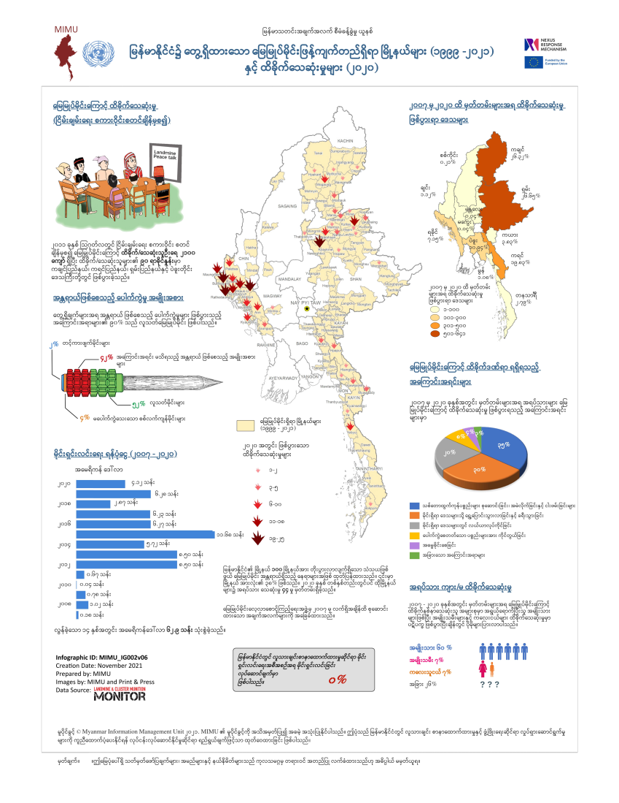

This infographic visualizes reported landmine contamination and casualties across Myanmar between 1999 and 2021. It shows how widespread contamination remains and how landmine incidents frequently occur during everyday activities such as farming, travel, and gathering forest products.
Within this archive, it contextualizes the photographs of medical treatment, demining training, and humanitarian education.

Method: metadata / map / infographic analysis
This artifact (A11_map_burmese_infographic_raw.png) was processed through the map and infographic metadata pipeline.
See consolidated results in the AI Analysis section.
It does so by showing the broader scale of the landmine crisis.